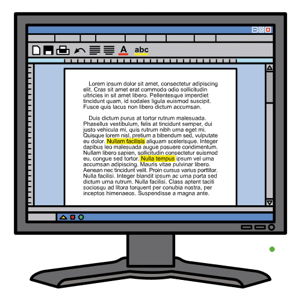
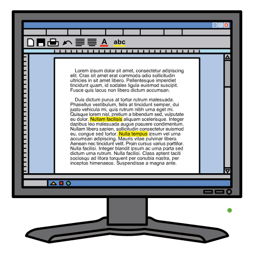
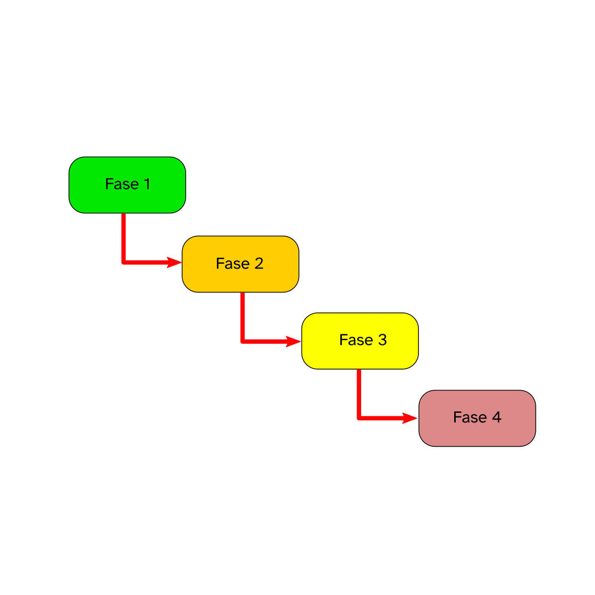

Diccionario
Software

- Definición:
-
Elemento de una página que hace que el navegador acceda a otro recurso o página web.
- Ejemplo:
-
Cuando navegas por una página y haces clic en una imagen o palabra para ir a otro sitio.

 Ya habéis aprendido todo lo necesario para poder crear vuestra página web que os permita desarrollar vuestro reto.
Ya habéis aprendido todo lo necesario para poder crear vuestra página web que os permita desarrollar vuestro reto.
Ahora os voy a enseñar algo muy importante cuando creamos software para resolver cualquier problema.
Se trata del ciclo de vida de una página web.
Aunque estoy seguro de que os "suena" todo esto. Yo os voy a dar una información que os permita comprenderlo mucho mejor.
¡No os lo podéis perder!
Definición:
Conjunto de programas que permiten a un ordenador realizar determinadas tareas.
Ejemplo:
Gracias al software podemos crear una página web.
Aquí os he preparado un vídeo muy interesante que os hablará del ciclo de vida del software, más concretamente de las páginas web.
Recuerda que puedes activar los subtítulos del video si lo necesitas.
Este vídeo te habla sobre el ciclo de vida del software, más concretamente de las páginas web. Es cierto que trata sobre un tema muy específico, pero los pasos pueden trasladarse a otros ámbitos o tareas de tu vida diaria.
Reflexiona en grupo sobre tareas para las que puedas usar los pasos que acabas de aprender. ¿Creéis que podrían usarse para la elaboración de cualquier programa? ¿Por qué?
 Después de ver el vídeo anterior, os propongo la siguiente actividad:
El trabajo lo podéis hacer utilizando:
Es normal, a mí también me suele pasar.
Te recomiendo volver a ver el vídeo del apartado 1. De principio a fin, y tomar nota de aquello que consideres importante.
Ahora vas a realizar la siguiente actividad de forma individual.
En los apartados anteriores has trabajado con tu grupo qué es el ciclo de vida de un software y sus fases.
Ahora, te presento las fases para la creación de una página web, pero hay un problema. Están desordenadas.
¿Serías capaz de encontrar el orden correcto del ciclo de vida de una página web?
Para que una página web esté accesible desde cualquier ordenador o teléfono móvil debe estar alojada en un servidor conectado a la red de internet.
Un servidor es un ordenador conectado a la red de internet que es capaz de recibir peticiones de un cliente, y devolver información. Esto lo hace mediante el protocolo HTTP (Protocolo de Transferencia de Hipertexto).
Los servidores alojan las páginas web, escritas normalmente en lenguaje HTML, y responden a las peticiones de los internautas (clientes) devolviendo la información solicitada.
En la siguiente imagen podéis ver un diagrama del modelo cliente-servidor.

Así cuando escribimos en nuestro navegador una dirección URL (Uniform Resource Locator), por ejemplo, https://www.wikipedia.org/, solicitamos como clientes al servidor la información de la página web y este la facilita al cliente que la visualiza mediante el navegador.
Un navegador es un programa que nos permite comunicarnos con el servidor y visualizar las páginas web, entre los navegadores más conocidos están Mozilla, Chrome, Safari u Opera.
Por tanto para que vuestras páginas web estén accesibles a todo el mundo hace falta que sean alojadas en un servidor, pero no os preocupeis que de esto se encargará vuestro profesor o profesora.
Con tu compañero o compañera lee las siguientes preguntas:
Elige las que mejor hayas entendido y explícalas con tus palabras a tu compañero.
Si necesitáis ayuda se la podéis pedir a otros compañeros o a tu profesora o profesor.
Cuando tenemos que hacer alguna actividad podemos tener dudas sobre si seremos capaces de hacerlo.
Para poder vencer a estos miedos en las nuevas actividades que tengas que hacer sigue estos consejos:
¡Lo harás genial!
Reflexiona un momento sobre todo lo que has aprendido hasta llegar aquí y completa el PASO 3 (Reviso lo aprendido) de tu Diario de aprendizaje.
Recuerda:
¡Ánimo, que lo harás genial!
Una buena estrategia para saber si avanzamos es hacernos preguntas de lo que vamos aprendiendo. Aquí te propongo que te pares un momento y respondas a las siguientes preguntas para saber cuánto dominas lo que acabamos de aprender:
Obra publicada con Licencia Creative Commons Reconocimiento No comercial Compartir igual 4.0